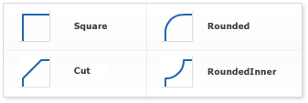

Background
Overview
In this tutorial we will explain in details how to configure background in AnyChart charting framework.
Background consists of fill, stroke and border corners. These element are configured using fill(), stroke() and corners() attributes. Background is used in chart titles, labels, tooltips, chart background, data plot, and many more, and they all are configured the same way.
Below you will find the reference of the most important parameters of the mentioned methods and see the demonstration of theirs settings.
Stroke
Border is configured using stroke() parameter. Stroke can be "Solid", "Dashed" and "Gradient". If type is "Solid", then color is specified using color attribute; to configure "Gradient" you have to use gradient keys. Dashed borders have to be set with special keys too.
Sample solid stroke settings:
chart.background().stroke("5 red");
Sample gradient stroke settings:
chart.background().stroke({
keys: [".1 red", ".5 yellow", ".9 blue"],
angle: 45,
thickness: 5
});
Sample dashed stroke settings:
chart.background().stroke({
color: "red",
dash: "5 2 5",
thickness: 5
});
On the chart below you can see 3 different border types and a chart without a border.
Fill
With AnyChart it is possible to color background with a solid color, with a gradient transition or fill it with an image. Fill is configured using fill() method and depending on the type it has different parameters.
Solid
When fill type is set to "Solid", background is filled with one color and you can control this color opacity. Colors can be defined with any of the methods described in Color management tutorial.Sample solid fill:
chart.background().fill("gold");
In the sample below a web graph, a data plot and a chart's title backgrounds are colored with a solid fill:
Gradient
AnyChart allows to create Gradient fills for any background. There are two types of gradient fills - "Linear" and "Radial". Sample gradient background:
chart.background().fill({
keys: ["#fff", "#66f", "#fff"],
angle: 130,
});
The sample below demonstrates how gradient fill can be used to create really attractive area chart.
The same sample, but with radial gradient fill:
Image
Image fill allows you to set an image as a background. An image can be stretched, tiled, fit by proportions and fit by maximal side. See ImageFillMode Enum. Supported image formats are JPEG, GIF, PNG. Sample image background:
chart.background().fill({
src: "//static.anychart.com/images/underwater.jpg",
mode: "fit"
});
Corners Settings
You can adjust the shape of borders corners, there are 4 types for corners: "Square", "Rounded", "Cut" and "RoundedInner". Appearance of these types is shown on the image below:

For "Rounded", "Cut" and "RoundedInner" types you can control not only the shape, but also a radius of "rounding" or "cutting" for all corners, or given corners. Sample settings for "rounding" all corners:
var background = chart.background();
background.stroke("3 red");
background.cornerType("round");
background.corners(10);
Also, it is possible to choose radius of any corner. Just set four number for every corner in this order: top-left, top-right, bottom-left, bottom-right corner. If a radius set to 0, no effect will be applied. Settings for bottom-right and bottom-left corners:
var background = chart.background();
background.stroke("black");
background.cornerType("cut");
background.corners(0, 0, 5, 5);
The dashboard below demonstrates all possible corners types:
Hatch Fill
Some printers may render colors differently from the image we see on monitors, so it may be hard to distinguish charts colored differently on monitors and similarly on prints. Also it is impossible to identify colors on prints of monochrome printers. AnyChart has a very useful feature - hatch fills, ideal for differentiating elements on black and white display or for those who are color blind. Hatch fill is fully-independent structure, it doesn't rely on color fill and has its own settings.
We've got a chart a with 5 series with 5 data points in each. For every series we've applied different hatch fills by setting hatch type through the hatchFill() parameter. As you can see, they can be either completely monochrome or colored.
var series0 = chart.bar(series[0]);
series0.fill(null);
series0.hatchFill("verticalBrick");
In the sample below there are all hatch types shown that are available in AnyChart. Explore the sample in the playground to see all these types' names.